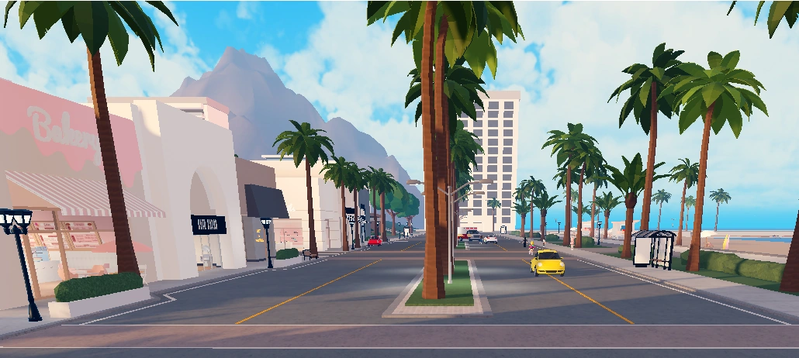

My favorite video game
first game is
Berry Avenue appears to be an immortal game, as only a handful of them can maintain more than 40,000 active players daily. In this article, players will find codes to redeem to collect stylish looks. and more
What do people do in it
One thing you can do is find codes and lock them in to make a stylish outfit to wear. Also if you want you can spent money on houses or just gust get one for free in order to get a house you need robux to get premiom so then you also can drive and also another thing you can do is adopt kids. as well they go shopping for clothes

what are codes?
Codes in this game are were you can type in and code and it gives you clothes or evens you a bag or exeserys. the way to get them is to go on youtube and type up berry avenue codes and you get diffrent options of outfits to wear.you can easaly get dressed into some nice clothes or another thing to do is to just fine some with out and codes just look and find what you like and want to wear


can you adopt kids?
If you are asking yes you can,well it depends on the person what i mean by that is you need you want to adopt because in this game you need to ask the person because the people are real is they dont want to be adopted thwn you cant dopt them or if you want to get a a baby you can go into items and get a not real one. witch you can change outfits too. CAN YOU IMAGINE!!!!